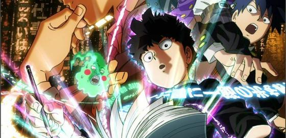
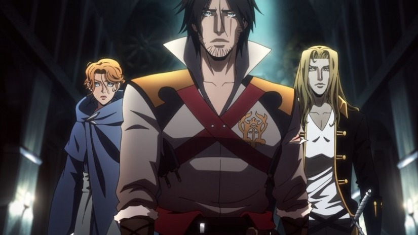
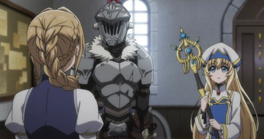

Mob Psycho 100 - Season 2 First Impressions
9 January 2019

Mob Psycho's second season follows the trappings of its first season, featuring the somewhat whimsical life of the awkward middle schooler, Mob. He's written as having an extremely plain disposition showing
very little in the way of emotion which juxtaposes with the feats he can pull off as a psychic who works for a Exorcism business. If you're familiar with One-Punch man, you'd recognize the similar style of
character from Saitama (both were created by ONE.) Season 2 stays true to the first, featuring some quirky school life antics that are themed around Mob's maturing and beautifully animated fight scenes of his
psychic battles. Overall, I don't have much to say about Mob Psycho other than that I enjoyed the previous season and look forward to seeing the rest of this one going forward.
JoJo's Bizzare Adventures: Golden Wind - Season 1 (-Episode 13) Review
9 January 2019

I felt conflicted on doing a season review when the show is going to continue going into the next season and this season didn't really have a climax. I've decided to go ahead with it though so that thoughts
are kept fresh.
Season 1 was almost entirely lent towards setting up the gang that Giorno is working with. It is unlike part 3 and 4 in that the side characters jump to the forefront almost immediately rather than maintaining
focus on JoJo for awhile. The stands of the both the allies and the enemies have seen a greater amount of variation in my opinion which comes with positives and negatives. The positive, of course, is
greater variation lends itself to some unique stands that really change the way that stand battles occur such as how Moody Jazz's (Moody Blues) power revolves around stepping through the motions of a
specified person with VHS like controls, allowing the stand user, Leona Abbachhio, to uncover information that would otherwise be unavailable.
The negative to this is that the asspulls are far greater
as the niche style or rules behind the stands makes it less reasonable to have a full on brawl. Giorna himself is arguably the worst offender in this case as it seems his stand's powers get amended every
couple of episodes. That said, it's easy to overlook these weak instances of writing as JoJo is as bombastic as ever and treads the line of being completely non-serious and overly-serious, a mixture I've
only ever seen the likes of Kojima pull off as well. JoJo is still a joy and I look forward to the rest of part.
Castlevania - Season 2 Review
9 January 2019

Castlevania Season 1 was already one of my favorite animated pieces in years despite only having 4 episodes so to hear that the second season had come out and with twice as many episodes, I was thoroughly
excited for this. And just like the previous season, this one struck many of the right notes on the head. The scope of Dracula's hellbent invasion is expanded as we learn about a council of trusted allies
he has gathered to confer with when making military decisions. One interesting twist this season is that two members of his council are humans, the very race being genocided. This fact mixed with the
some of the more power hungry vampires amongst the council create for some interesting interactions amongst the antagonists. Meanwhile, the Trevor, Sypha, and Alucard also develop amongst one another as
their unusual backgrounds are fleshed out. Trevor is forced to reflect on the less than pleasant circumstances the Belmont household forced upon on him as a kid that turned him into the incredibly skilled
vampire hunter he is today. Alucard juggles his emotions as he must be resolve to kill his father in order to preserve the race and wishes of his late mother. And Sypha acts as the most mature, talking
each of them through their turmoils as the adventure continues.
The show does an excellent job balancing world building with character development between these two parties. The animation is top notch
save for a few hiccups during particular scenes and Trevor's fights in particular feature beautiful choreography as he manipulates his whip to strike his enemies in skillful manners. The final scene
was an unexpected gut punch and I really appreciate the creators' willingness to commit to the scene. I eagerly await a season 3 for this show.
Goblin Slayer - First Impressions
29 October 2018

The show starts off innocently, introducing us a young priestess who has just become an adventurer. She is introduced to a group of fellow nooby adventurers who are antsy to go on their first quest. She
hesitantly agrees and they set off immediately. Their adventures takes a turn for the worse as their first targets, goblins turn out to be far more threatening that they had predicted. All but the priestess
wind up dead or abducted and as the goblins begin to surround her, a helmeted fifth adventurer appears and slays her attackers. This man goes by Goblin Slayer. Goblin Slayer goes on to clear out the goblins
entire nest, pointing out the tricks and errors that her adventuring party had made. This character is merciless and stoic, not doing much to comfort Priestess but allowing her an outlet through vengeance.
While I enjoy a little indulgence in gore, I am always a little skeptical of shows that ride too heavily on the shock value that rides with it. Furthermore, neither one of these characters had all that much
in the way of character so I'm not totally convinced that it will still be interesting by the end of the season. Lastly, I hope that the Goblin Slayer is not solely true to his name and hunts things other
than goblins or else this show will not have many legs to stand on.